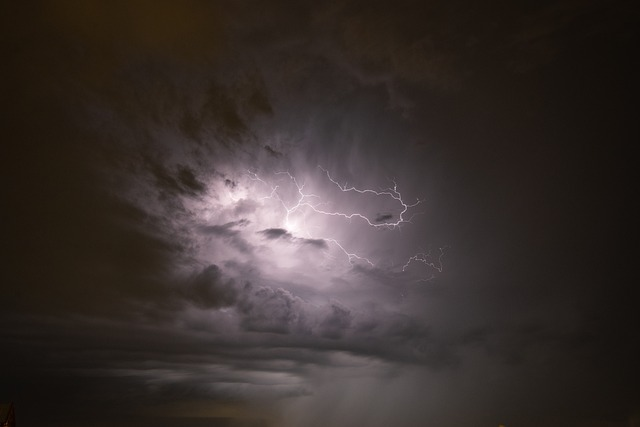
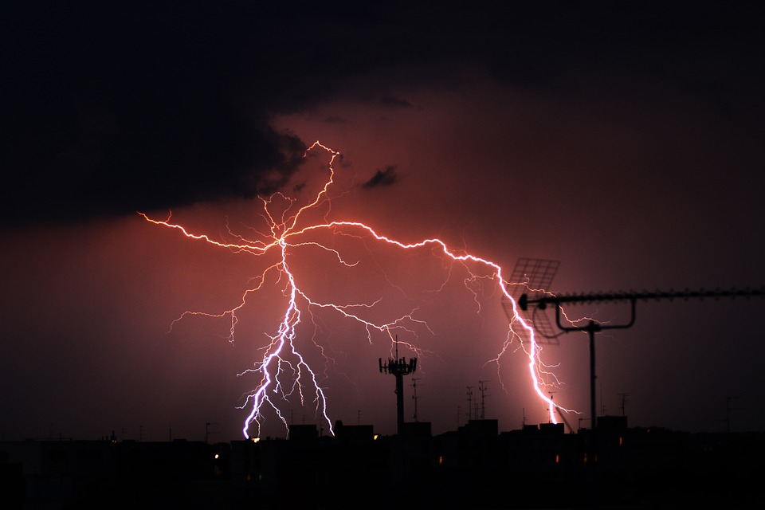

Tunetul este sunetul produs în urma unui proces de descărcare electrică în atmosferă (fulger sau trăsnet).
În momentul descărcării electrice, 90% din energia descărcată este transformată rapid în căldură care încălzește aerul din jurul canalului, temperaturile ajungând până la 39,000 °C în cazul trăsnetelor pozitive de mare intensitate. O creștere rapidă și bruscă în presiune și temperatură forțează aerul înconjurător să se extindă rapid și violent într-o undă de șoc de mare intensitate, similară unui boom sonic. Unda de șoc se extinde rapid pe o distanță maximă de 10 metri, după care încetinește și devine o undă sonoră percepută de urechile noastre ca tunet. Cu alte cuvinte, tunetul este aerul care explodează de-a lungul întregului canal al trăsnetului.
Viteza de propagare a tunetului depinde, printre alți parametri, și de temperatura atmosferei. Temperatura de obicei descrește cu altitudinea, doar dacă nu există un proces numit inversie, adică aerul cald trece peste aerul rece. În acest caz, tunetul va fi deviat în sus. Umiditatea, viteza vântului, inversia temperaturii, proprietățile geografice (terenului) și norii pot afecta distanța pe care un tunet poate fi auzit. Intensitatea auditivă a tunetului poate fi exprimată în decibeli (dB), și este egală cu 120 de dB pe distanță apropiată. Cu alte cuvinte, sunetul produs este de 10 ori mai gălăgios decât o mașină de gunoi sau un ciocan pneumatic. În comparație, dacă stai în fața boxelor la un concert rock vei fi expus constant la același nivel de dB.
Tunetul este responsabil pentru pagubele produse la nivel material atunci când vine vorba de un trăsnet. Trăsnetul reprezintă descărcarea electrică dar unda de șoc produsă de explozia rapidă a aerului (tunetul) este responsabil pentru pagubele materiale produse la clădiri, stâlpi, copaci etc. Așadar, dacă o casă sau o altă clădire este lovită de un trăsnet, aceasta are șanse mari de a fi afectată și la nivel material deoarece unda de șoc în proximitate mică este foarte devastatoare.
De asemenea, tunetul pe distanță mică poate cauza observatorului pierderea auzului temporar sau permanent prin perforarea membranei timpanului. Tunetul conține un fel de presiune cilindrică inițială sub formă de undă de șoc de-a lungul canalului trăsnetului depășind de 10 ori presiunea atmosferică normală. Această undă de șoc încetinește rapid după o distanță de câțiva metri (vezi mai sus). Când tunetul este auzit de observator de la o distanță de 100 metri (328 ft), acesta consistă dintr-un singur 'bang' ca de explozie, totuși se pot auzi mici sunete de "sâsâsit" sau "clic". Atunci când observatorul este la 1 km depărtare (.6 mi), tunetul se va auzi ca un sunet de rostogolire urmat de câteva bătăi din palme puternice.
Tunetul poate fi auzit până la o distanță de 16 km (10 mi), dacă condițiile sunt ideale. Tunetul auzit de un observator distant are o caracteristică specifică de un sunet de frecvență joasă 'pițigăiat', ca sunetul produs de stomac atunci când îți este foame. Intensitatea unui sunet, fie înaltă sau joasă, este cauzată de absorbția și răspândirea puternică a componentelor de înaltă frecventă a undelor sonore inițiale, în timp ce sunetul de "chiorăit" este produs de faptul că undele sonore sunt emise din locații diferite de-a lungul canalului, ce pot fi mai departe sau mai aproape de observator. Cu cât canalul este mai lung, cu atât tunetul poate fi auzit de la distanțe mai mari. Urechea umană poate capta sunetul produs de un trăsnet dacă este cuprins între 20-120 Hertz (Hz). Chiar și așa, o parte mică din sunetul produs de un trăsnet, în procent de 10% nu poate fi auzit de urechea umană din cauza frecvenței acestuia. Dispozitive dotate special pot capta aceste tipuri de sunete.
Tunetul poate fi auzit până la o distanță de 16 km (10 mi), dacă condițiile sunt ideale. Tunetul auzit de un observator distant are o caracteristică specifică de un sunet de frecvență joasă 'pițigăiat', ca sunetul produs de stomac atunci când îți este foame. Intensitatea unui sunet, fie înaltă sau joasă, este cauzată de absorbția și răspândirea puternică a componentelor de înaltă frecventă a undelor sonore inițiale, în timp ce sunetul de "chiorăit" este produs de faptul că undele sonore sunt emise din locații diferite de-a lungul canalului, ce pot fi mai departe sau mai aproape de observator. Cu cât canalul este mai lung, cu atât tunetul poate fi auzit de la distanțe mai mari. Urechea umană poate capta sunetul produs de un trăsnet dacă este cuprins între 20-120 Hertz (Hz). Chiar și așa, o parte mică din sunetul produs de un trăsnet, în procent de 10% nu poate fi auzit de urechea umană din cauza frecvenței acestuia. Dispozitive dotate special pot capta aceste tipuri de sunete.
Putem folosi tunetul pentru a afla cât de lung a fost canalul trăsnetului și la ce distanță se află acesta de noi. Spre exemplu, dacă vedem fulgerul acum și începem să numărăm până la 9 secunde când auzim un sunet puternic ca de bătaie din palme, sau ca un boom puternic atunci înseamnă că trăsnetul a lovit pământul la o distanță de 3 km. Chiar și așa, atunci când faceți această numărătoare, este recomandat să numărați până când auziți primul sunet distinctiv, puternic și ca o bătaie puternică și să nu vă opriți atunci când auziți orice fel de sunet deoarece puteți auzi prima dată terminațiile canalului ascunse în nor care nu sunt vizibile observatorului și care se pot afla chiar deasupra voastră și nu actualul canal al trăsnetului. De aceea atunci când vreți să calculați această distanță, ascultați cu atenție trăsnetul și faceți diferența dintre sunetele de pocnit, crăpat sau în general sunete mai ușoare ale extensiilor canalului sau a terminațiilor ascunse în nor și sunetul/sunetele distinctive puternice ca un boom, ca o bătaie din palme care sunt sunetele canalului principal (tocmai din această cauză acestea se aud mult mai puternic față de extensiile canalului principal).